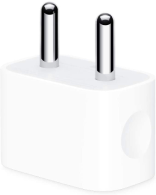

<app-header
  [title]="title"
  [backBtn]="false"
  [notificationIcon]="false"
  [nextBtn]="false"
  [doneBtn]="false"
  [saveBtn]="false"
></app-header>

<ion-content>
  <div class="prod-img">
    
  </div>

  <div *ngIf="statusConnected;else statusNotConnected">
    <div class="prod-img">
      
    </div>
    <ion-text>
      <p>Channel Connected</p>
    </ion-text>
    <ion-text>
      <p>Remote Access Enabled</p>
    </ion-text>
    <div class="scan-btn">
      <button type="button" (click)="home()">Done, take me Home</button>
    </div>

    <div class="add-channel-device">
      <div class="left">
        <a (click)="addChannel()">
          <ion-icon name="add"></ion-icon>Add channels
        </a>
      </div>
      <div class="right">
        <a (click)="addDevice()">
          <ion-icon name="add"></ion-icon>Add Devices
        </a>
      </div>
    </div>
  </div>

  <ng-template #statusNotConnected>
    <div>
      <fa-icon class="ban-icon" [icon]="['fas','ban']"></fa-icon>
    </div>
    <ion-text>
      <p>Channel Not Connected!</p>
    </ion-text>
    <ion-text>
      <p>Not Enabled, Please Try Again.</p>
    </ion-text>
    <div class="scan-btn">
      <button type="button" (click)="channelPage()">Try Again</button>
    </div>
  </ng-template>

  <app-footer-component></app-footer-component>
</ion-content>
